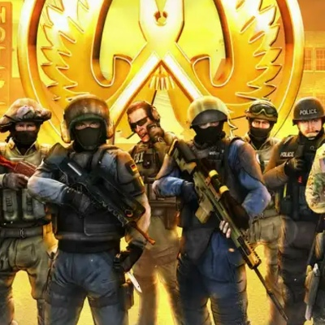
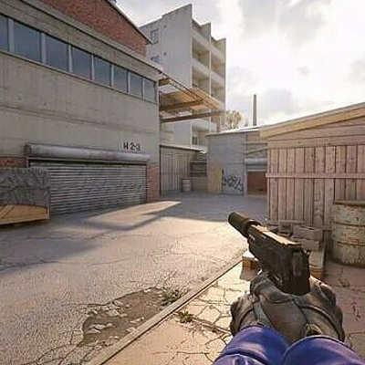
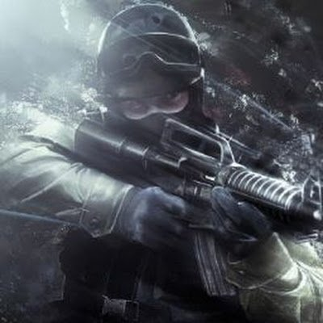

counter-Strike 2 (CS2) — компьютерная игра в жанре многопользовательского тактического шутера от первого лица, разработанная компанией Valve. Это пятая игра в серии Counter-Strike, разработана как обновлённая версия предыдущей игры Counter-Strike: Global Offensive (2012).